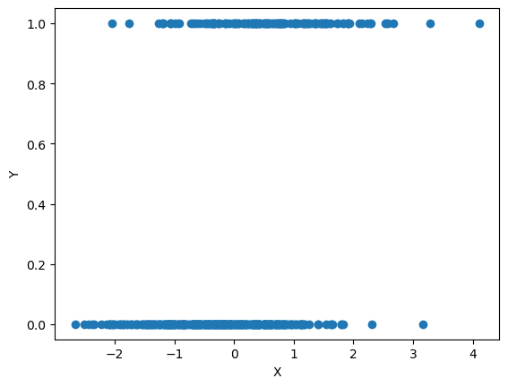
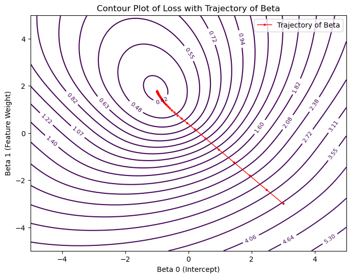
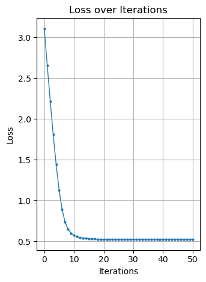
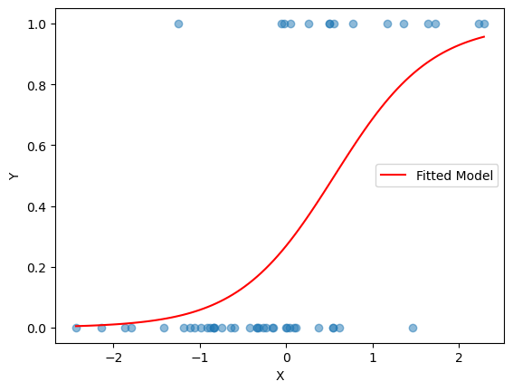
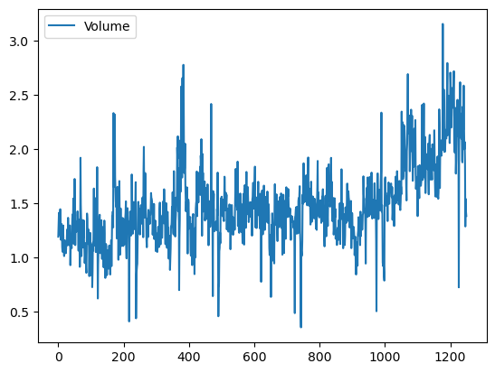

import numpy as np
import matplotlib.pyplot as plt
import warnings
warnings.filterwarnings('ignore')Lecture 4 - Classification
Logistic Regression
Data Example
np.random.seed(2)
def sigmoid(z):
# equivalent to e^(z)/(1 + e^{-z})
return 1 / (1 + np.exp(-z))
n = 50
# Generate a synthetic dataset with a single feature
X = np.random.randn(n, 1)
beta1 = 1
beta0 = -1
Y = np.random.binomial(1, sigmoid(beta0 + beta1 * X))
Y = Y.ravel()
## plot X against Y
plt.scatter(X, Y)
plt.xlabel('X')
plt.ylabel('Y')
plt.show()
Gradient descent demonstration
def compute_loss(X, y, weights):
n = X.shape[0]
prob_pred = sigmoid(X @ weights)
loss = (-1 / n) * np.sum(y * np.log(prob_pred) + (1 - y) * np.log(1 - prob_pred))
return loss
def gradient_descent(X, y, weights, learning_rate, iterations):
n = X.shape[0]
loss = compute_loss(X, y, weights)
loss_history = [loss]
weight_history = [weights.copy()]
for i in range(iterations):
prob_pred = sigmoid(X @ weights)
gradient = X.T @ (prob_pred - y) / n
weights -= learning_rate * gradient ## weights = weights - learning_rate * gradient
loss = compute_loss(X, y, weights)
loss_history.append(loss)
weight_history.append(weights.copy())
return weights, loss_history, weight_history# Add intercept to X
Xint = np.hstack((np.ones((X.shape[0], 1)), X))
# Initialize weights
init_weights = np.array([3.0, -3.0])
# Perform Gradient Descent
learning_rate = 1
niter = 50
weights, loss_history, weight_history = gradient_descent(Xint, Y, init_weights, learning_rate, iterations=niter)
## compare estimated weights with true weights
print('Estimated weights:', weights)
print('True weights:', np.array([beta0, beta1]))Estimated weights: [-1.002386 1.78334711]
True weights: [-1 1]# Create a grid for contour plot
beta0_range = np.linspace(-5, 5, 100)
beta1_range = np.linspace(-5, 5, 100)
B0, B1 = np.meshgrid(beta0_range, beta1_range)
# Compute loss for each combination in the grid
Loss = np.zeros(B0.shape)
for i in range(B0.shape[0]):
for j in range(B0.shape[1]):
Loss[i, j] = compute_loss(Xint, Y, np.array([B0[i, j], B1[i, j]]))
# Plotting
plt.figure(figsize=(8, 6))
# Contour plot for the loss
contour = plt.contour(B0, B1, Loss, levels=np.logspace(-2, 2, 70), cmap='viridis')
plt.clabel(contour, inline=True, fontsize=8)
# Overlay the trajectory of beta
beta_trajectory = np.array(weight_history)
plt.plot(beta_trajectory[:, 0], beta_trajectory[:, 1], '-o', color='red', label='Trajectory of Beta', lw=1, markersize=2)
plt.title('Contour Plot of Loss with Trajectory of Beta')
plt.xlabel('Beta 0 (Intercept)')
plt.ylabel('Beta 1 (Feature Weight)')
plt.legend()
plt.show()
# Plot for Loss over Iterations
plt.plot(loss_history, '-o', markersize=2, lw=1)
plt.title('Loss over Iterations')
plt.xlabel('Iterations')
plt.ylabel('Loss')
plt.grid(True)
plt.tight_layout()
plt.show()
import matplotlib.pyplot as plt
# Scatter plot of X vs Y
plt.scatter(X, Y, alpha=0.5)
plt.xlabel('X')
plt.ylabel('Y')
# Generate x values for the sigmoid curve
x_vals = np.linspace(X.min(), X.max(), 100)
# Compute sigmoid with learned weights
sigmoid_vals = sigmoid(weights[0] + weights[1] * x_vals)
plt.plot(x_vals, sigmoid_vals, color='red', label='Fitted Model')
plt.legend()
plt.show()
Stock Market Data
Adapted from Introduction to Statistical Learning with Python (link)
We now examine the Smarket data, which is part of the ISLP library. This data set consists of percentage returns for the S&P 500 stock index over 1,250 days, from the beginning of 2001 until the end of 2005. For each date, we have recorded the percentage returns for each of the five previous trading days, Lag1 through Lag5. We have also recorded Volume (the number of shares traded on the previous day, in billions), Today (the percentage return on the date in question) and Direction (whether the market was Up or Down on this date).
If you do not have the ISLP package, install it by going to your terminal (e.g. in VSCode or Anaconda Prompt):
conda activate stat486
pip install ISLPimport numpy as np
import pandas as pd
import statsmodels.api as sm
from ISLP import load_data
from ISLP import confusion_tableLoading the SMarket data:
Smarket = load_data('Smarket')
Smarket| Year | Lag1 | Lag2 | Lag3 | Lag4 | Lag5 | Volume | Today | Direction | |
|---|---|---|---|---|---|---|---|---|---|
| 0 | 2001 | 0.381 | -0.192 | -2.624 | -1.055 | 5.010 | 1.19130 | 0.959 | Up |
| 1 | 2001 | 0.959 | 0.381 | -0.192 | -2.624 | -1.055 | 1.29650 | 1.032 | Up |
| 2 | 2001 | 1.032 | 0.959 | 0.381 | -0.192 | -2.624 | 1.41120 | -0.623 | Down |
| 3 | 2001 | -0.623 | 1.032 | 0.959 | 0.381 | -0.192 | 1.27600 | 0.614 | Up |
| 4 | 2001 | 0.614 | -0.623 | 1.032 | 0.959 | 0.381 | 1.20570 | 0.213 | Up |
| ... | ... | ... | ... | ... | ... | ... | ... | ... | ... |
| 1245 | 2005 | 0.422 | 0.252 | -0.024 | -0.584 | -0.285 | 1.88850 | 0.043 | Up |
| 1246 | 2005 | 0.043 | 0.422 | 0.252 | -0.024 | -0.584 | 1.28581 | -0.955 | Down |
| 1247 | 2005 | -0.955 | 0.043 | 0.422 | 0.252 | -0.024 | 1.54047 | 0.130 | Up |
| 1248 | 2005 | 0.130 | -0.955 | 0.043 | 0.422 | 0.252 | 1.42236 | -0.298 | Down |
| 1249 | 2005 | -0.298 | 0.130 | -0.955 | 0.043 | 0.422 | 1.38254 | -0.489 | Down |
1250 rows × 9 columns
Smarket.columnsIndex(['Year', 'Lag1', 'Lag2', 'Lag3', 'Lag4', 'Lag5', 'Volume', 'Today',
'Direction'],
dtype='object')We compute the correlation matrix using the corr() method for data frames, which produces a matrix that contains all of the pairwise correlations among the variables.
By instructing pandas to use only numeric variables, the corr() method does not report a correlation for the Direction variable because it is qualitative.
Smarket.corr(numeric_only=True)| Year | Lag1 | Lag2 | Lag3 | Lag4 | Lag5 | Volume | Today | |
|---|---|---|---|---|---|---|---|---|
| Year | 1.000000 | 0.029700 | 0.030596 | 0.033195 | 0.035689 | 0.029788 | 0.539006 | 0.030095 |
| Lag1 | 0.029700 | 1.000000 | -0.026294 | -0.010803 | -0.002986 | -0.005675 | 0.040910 | -0.026155 |
| Lag2 | 0.030596 | -0.026294 | 1.000000 | -0.025897 | -0.010854 | -0.003558 | -0.043383 | -0.010250 |
| Lag3 | 0.033195 | -0.010803 | -0.025897 | 1.000000 | -0.024051 | -0.018808 | -0.041824 | -0.002448 |
| Lag4 | 0.035689 | -0.002986 | -0.010854 | -0.024051 | 1.000000 | -0.027084 | -0.048414 | -0.006900 |
| Lag5 | 0.029788 | -0.005675 | -0.003558 | -0.018808 | -0.027084 | 1.000000 | -0.022002 | -0.034860 |
| Volume | 0.539006 | 0.040910 | -0.043383 | -0.041824 | -0.048414 | -0.022002 | 1.000000 | 0.014592 |
| Today | 0.030095 | -0.026155 | -0.010250 | -0.002448 | -0.006900 | -0.034860 | 0.014592 | 1.000000 |
Smarket.plot(y='Volume');
allvars = Smarket.columns.drop(['Today', 'Direction', 'Year'])
X = Smarket[allvars]
Xint = np.hstack((np.ones((X.shape[0], 1)), X))
y = Smarket.Direction == 'Up'
train = (Smarket.Year < 2005)
X_train, X_test = Xint[train], Xint[~train]
y_train, y_test = y[train], y[~train]Logistic Regression
Next, we will fit a logistic regression model in order to predict Direction using Lag1 through Lag5 and Volume. The sm.GLM() function fits generalized linear models, a class of models that includes logistic regression. Alternatively, the function sm.Logit() fits a logistic regression model directly. The syntax of sm.GLM() is similar to that of sm.OLS(), except that we must pass in the argument family=sm.families.Binomial() in order to tell statsmodels to run a logistic regression rather than some other type of generalized linear model.
glm = sm.GLM(y_train,
X_train,
family=sm.families.Binomial())
results = glm.fit()
coeffs = results.paramsfeatures_list = ['Intercept'] + list(X.columns)
print("Coefficients:")
for i, f in enumerate(features_list):
print(f"{f}: {coeffs[i]:.4f}")Coefficients:
Intercept: 0.1912
Lag1: -0.0542
Lag2: -0.0458
Lag3: 0.0072
Lag4: 0.0064
Lag5: -0.0042
Volume: -0.1163probs = results.predict(X_test)# turn predictions in to labels
labels = np.array(['Down']*len(probs))
labels[probs>0.5] = "Up"# turn test data into labels
L_test = np.array(['Down']*len(probs))
L_test[y_test == 1] = 'Up'confusion_table(labels, L_test)| Truth | Down | Up |
|---|---|---|
| Predicted | ||
| Down | 77 | 97 |
| Up | 34 | 44 |
np.mean(labels == L_test), (77+44)/len(L_test)(np.float64(0.4801587301587302), 0.4801587301587302)It is worse than random guessing!
Let’s try just Lag 1 and Lag 2.
X = Smarket[['Lag1', 'Lag2']]
Xint = np.hstack((np.ones((X.shape[0], 1)), X))
y = Smarket.Direction == 'Up'
train = (Smarket.Year < 2005)
X_train, X_test = Xint[train], Xint[~train]
y_train, y_test = y[train], y[~train]glm_train = sm.GLM(y_train,
X_train,
family=sm.families.Binomial())
results = glm_train.fit()
probs = results.predict(exog=X_test)
labels = np.array(['Down']*len(y_test))
labels[probs>0.5] = 'Up'
L_test = np.array(['Down']*len(probs))
L_test[y_test == 1] = 'Up'
confusion_table(labels, L_test)| Truth | Down | Up |
|---|---|---|
| Predicted | ||
| Down | 35 | 35 |
| Up | 76 | 106 |
np.mean(labels == L_test)np.float64(0.5595238095238095)A bit better! We will talk about how to do more systematic feature selection next class.